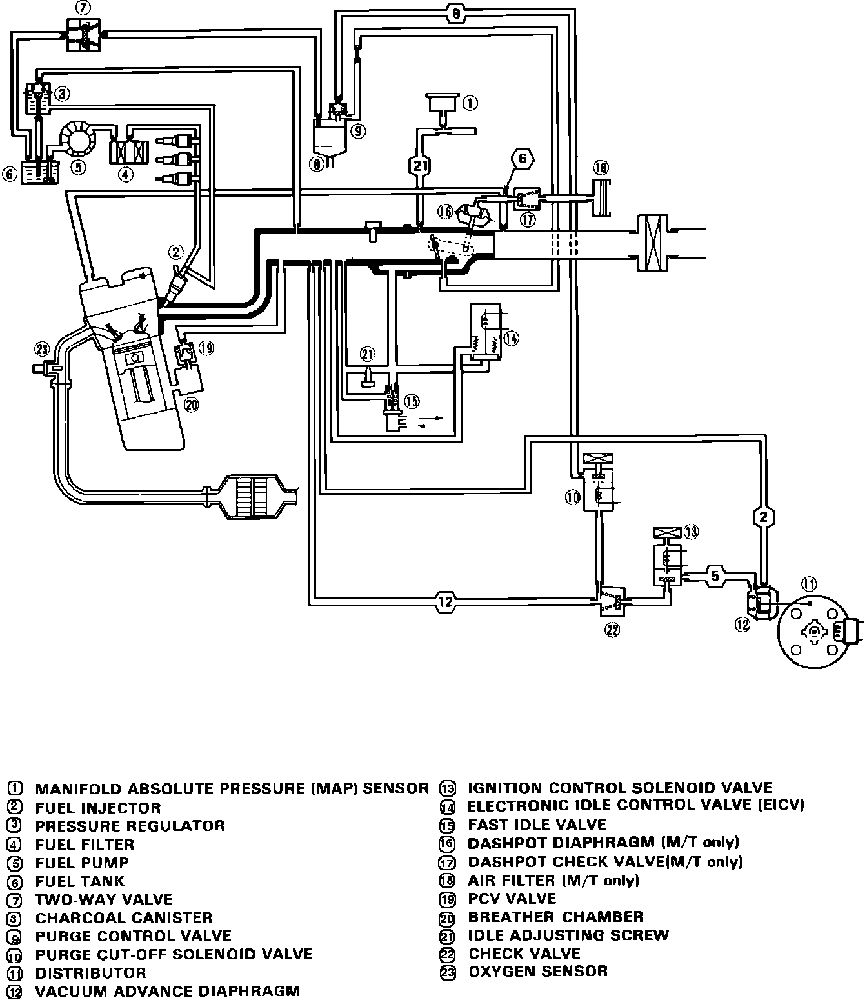

Operation CHARM
: Car repair manuals for everyone.
Home
>>
Acura
>>
1986
>>
Integra L4-1590cc 1.6L DOHC FI
>>
Repair and Diagnosis
>>
Diagrams
>>
Vacuum and Vapor Hose Diagrams
>>
Emission Control Systems
>>
Fig. 1 Emission Control Vacuum Hose Routing
Fig. 1 Emission Control Vacuum Hose Routing
Fig. 1 Emission Control Vacuum Hose Routing.:
